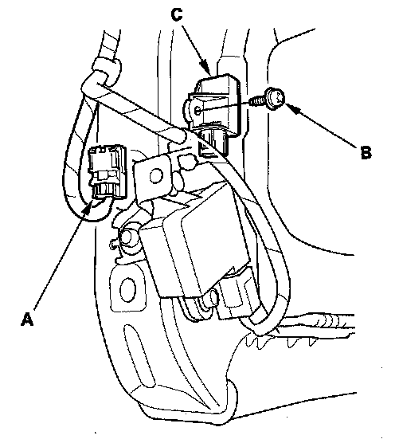

Front Impact Sensor Replacement
Front Impact Sensor ReplacementRemoval
1. Disconnect the negative cable from the battery, and wait at least 3 minutes before beginning work.
2. Disconnect the driver's airbag 4P connector, the front passenger's airbag 4P connector, and both seat belt tensioner 4P connectors.
3. Remove the front bumper.

4. Disconnect the left or right engine compartment wire harness 2P connector (A). Using a TORX T30 bit, remove the TORX bolts (B), then remove the front impact sensor (C).
Installation
1. Install the new front impact sensor with a new TORX bolts (A), then connect the left or right engine compartment wire harness 2P connector (B) to the front impact sensor (C).
2. Reconnect the negative cable to the battery.
3. After installing the front impact sensor, confirm proper system operation: Turn the ignition switch ON (II); the SRS indicator should come on for about 6 seconds and then go off.
4. Reinstall all removed parts.